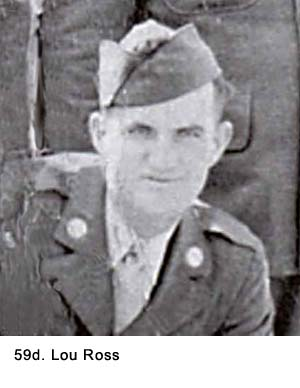
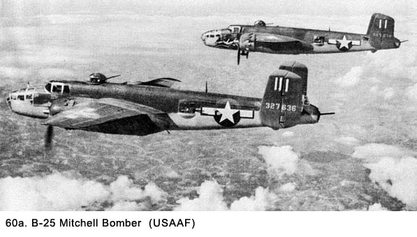

|
Table of Contents < - - - return Chapter 8 < - - - next
World War II Story by Robert F. Gallagher Chapter 7 - One More Try Our greatest glory is not in never falling but in rising every time we fall. Confucius _______________________ After a whole year in the Army, I still wanted to be an air cadet but had been unable to re-take the eligibility tests. The one inquiry I had made was completely rebuffed and I was told to forget it. But I could not forget it. By this time in my training, I felt time was passing and my aspirations were being extinguished. I became so negative I could not even enjoy other people's good fortune. I quit writing to John Boswell, the fellow I had taken the first test with when we were both civilians. In his last letter, he had told me he had graduated from training planes to a P-38 fighter plane. I could not stand to hear about his good fortune while I was grounded in an outfit I did not like. Then, suddenly, a ray of hope emerged. There was a fellow in our outfit named Lou Ross (See Fig. 59d) who had the same interest in flying as I did, and he also wanted to take the test. I met him through one of my crewmates, and we spent some time together at the PX. Whenever we were together, we talked principally about getting into the Army Air Force. Finally, we devised a plan to make a stab at it. Lou had gone to high school in Detroit with one of the officers in Headquarters Battery. We decided to enlist his aid in getting permission to take the test, and it worked. Again, I got some static from Monteleone and some of his band of evil men, but the permission had been passed down to officers in our battery and the sergeants decided not to fight it. Lou and I went over to March Field on a Saturday and took the written exam. About a week later, we were notified we had passed, and a date was set for our physicals. I was worried about my pulse rate, which kept me out the first time, so I kept checking it myself. It was in a normal range. Just a few days before the test, our outfit went out on an overnight bivouac in an area just outside of camp. It included some mock battle conditions that kept us up most of the night. Lou and I were not in our best physical condition from lack of sleep, but we both passed the test with flying colors. They told us to come back in two weeks to go before a three-man review board. A sergeant who was monitoring the test said because we were already soldiers, there was a ninety-nine percent chance we would be accepted. "Just give a snappy salute, and use a lot of 'yes, sirs' and 'no, sirs,'" he told us. If we were accepted, we would be transferred to the Air Force that day. Lou and I left feeling like we had just hit the jackpot because it was what both of us had wanted for a long time. The next weekend Lou and I got passes and hitchhiked into Hollywood. We went to the Brown Derby nightclub and a lot of other exciting places. We were celebrating our good fortune and money was no object, at least up to our limit. We talked about what we were going to be doing in the Air Force and about what kinds of planes we wanted to fly after graduating as pilots. He wanted a fighter; I wanted a two-engine bomber. I had seen two B25 Billy Mitchell bombers at Municipal Airport (Midway) in Chicago, and I thought they were the greatest things going (See Fig. 60a). Also, I worried I might be too big to fit into the cockpit of a fighter plane. Actually, I would have been happy to be flying any kind of plane.  On Sunday we hitchhiked back to Riverside, then caught an Army bus to camp. We arrived at about 2330 hours just half an hour before we were due back. All my hut mates were sleeping. I decided to go up to the orderly room to check and see if I was on any special details for the coming week. While scanning the lists with a flashlight, I saw a small typed note that had been copied from some Army directive. It read, "There will be no more transfers from the Ground Forces to the Air Force." That's all, just one sentence - one shocking sentence. The news hit like a thunderbolt. A hard punch in the nose would have been less painful than reading that note. Neither Lou nor I ever got to be Cadets. We never even got to go for the interview. The door had been closed tight, and there was no way to open it. I was depressed for months, and the sadness I felt on finally losing all hope of reaching the goal I had wanted for many years gnawed away at my feelings for the rest of my time in the service. It would let up at times but was always lurking in the back of my mind. I kept asking, what if? My fellow crewmembers did not know the depth of my sorrow in not getting into the Air Force because I had never fully expressed to them my desire to do so. I hadn't done myself any good with the officers and noncoms in trying to get transferred out of the 815th, but that was the least of my worries. Until I had expended all efforts to get into the Air Force, I could not accept the outfit I was in as my final destiny. Now was the time. I decided to make the best of the hand I had been dealt. Chapter 8 < - - - next Table of Contents < - - - return
Footnotes and Source of Photographs. Copyright, Robert F. Gallagher, 1999 - 2015, all rights reserved on all images and content.
|